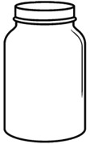

¡Aprendamos jugando!
Nuevo Juego
🎮 Juego de Medidas y Estimación
Presiona el botón para comenzar.
Escucharás las instrucciones por voz.
Iniciar Juego
Llena el vaso hasta el nivel pedido
0%

➖
0%
➕
✓
Ajusta la longitud del objeto
0
◀
▶
✓
¿Cuál canasta tiene exactamente
5
frutas?
Juego completado
Jugar de nuevo
¡Juego completado!
Siguiente
¡Felicidades!
Finalizar
Ver colección
Mis personajes desbloqueados
Cerrar